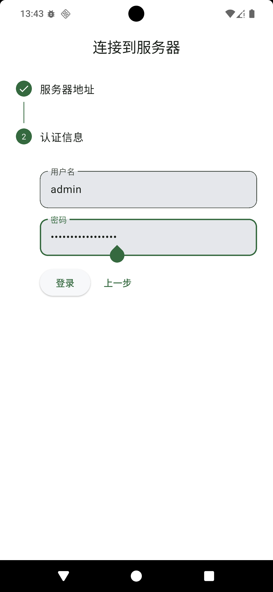
快速开始
登录凭据
lib/features/auth/pages/login_page.dart
这份导出包归档了 Echo Listening System 重构前真实存在的功能截图，仅用于核对页面范围、业务流程和历史基线， 不代表当前 UI，也不能作为新版演示或发布素材。新版截图将在移动端最终验收后重新采集。
登录与服务配置入口

lib/features/auth/pages/login_page.dart
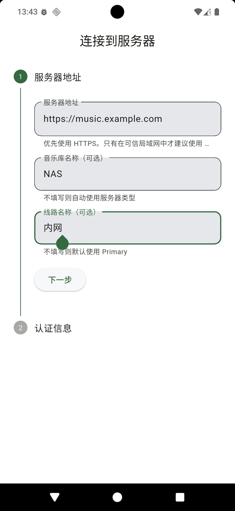
lib/features/auth/pages/login_page.dart
lib/features/library/pages/edit_library_page.dart
首页、探索与个人入口
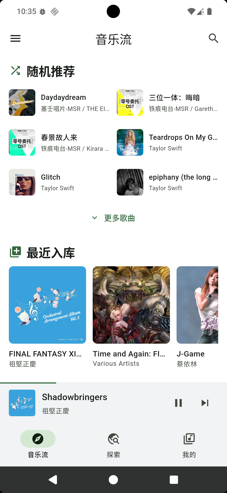
lib/features/discover/pages/discover_page.dart
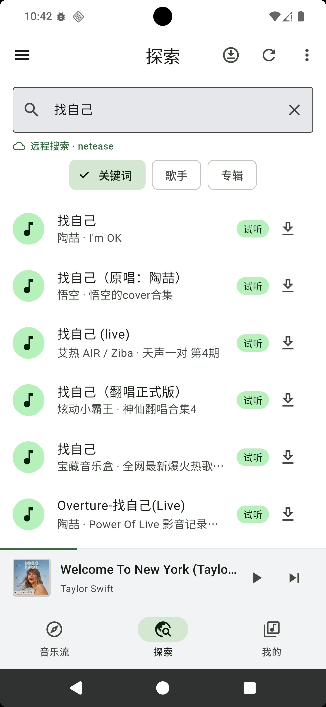
lib/features/explore/pages/explore_page.dart
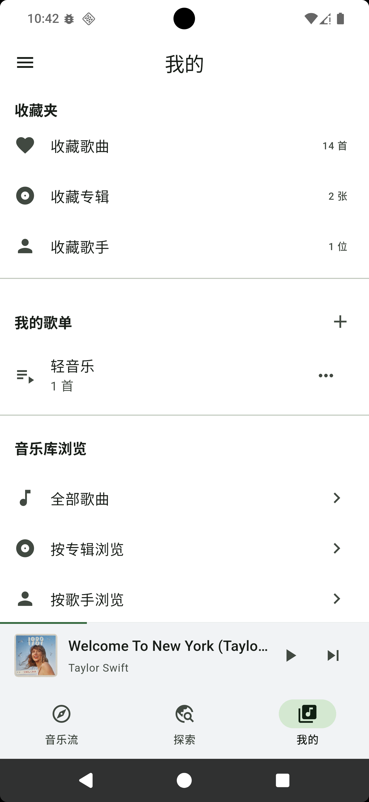
lib/features/library/pages/library_page.dart
多库与多线路配置
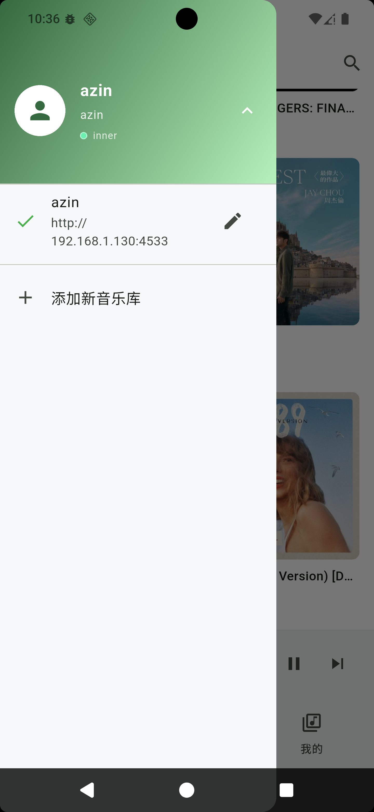
lib/features/library/pages/library_page.dart
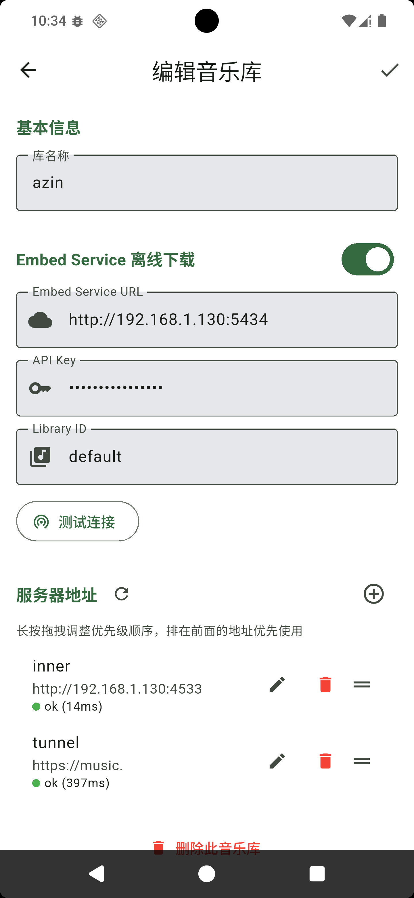
lib/features/library/pages/edit_library_page.dart
主播放器与歌词面板
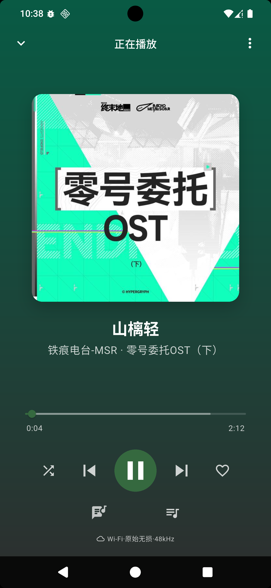
lib/features/player/pages/full_player_page.dart
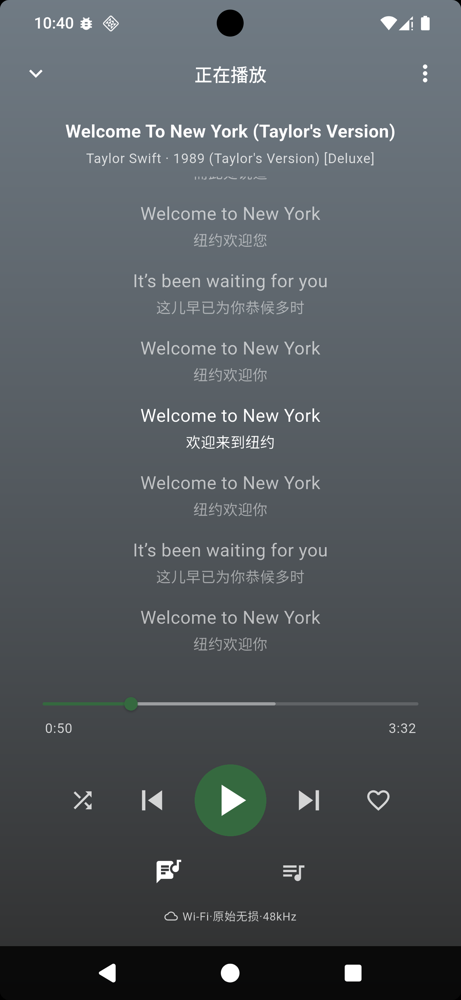
lib/features/player/pages/full_player_page.dart
下载任务和离线资源管理
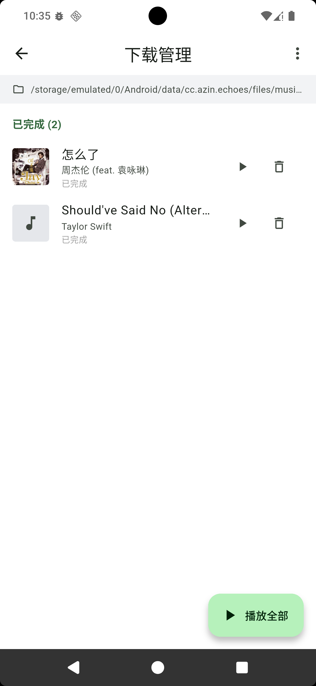
lib/features/download/pages/download_manager_page.dart
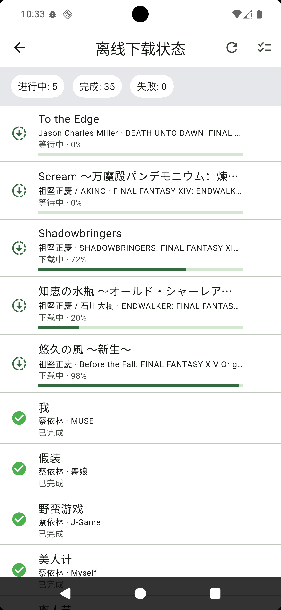
lib/features/offline/pages/offline_download_status_page.dart
统计、缓存和主题配置
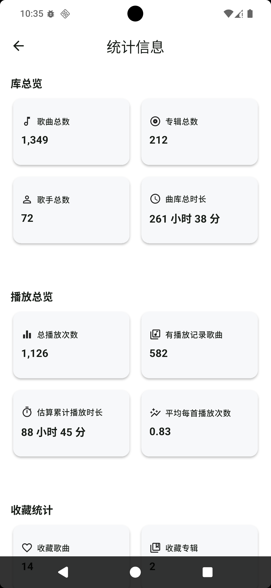
lib/features/settings/pages/playback_stats_page.dart
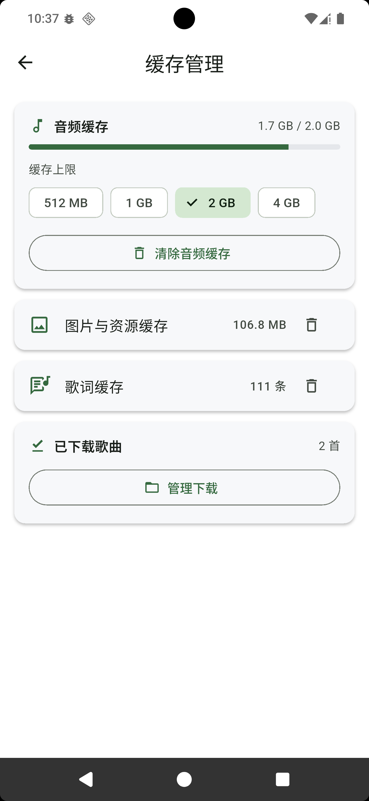
lib/features/settings/pages/cache_management_page.dart
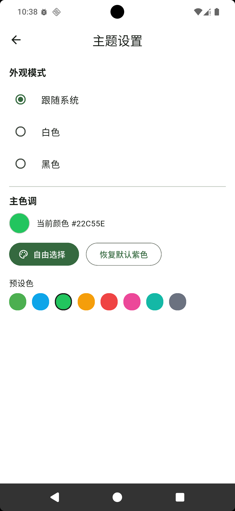
lib/features/settings/pages/theme_settings_page.dart